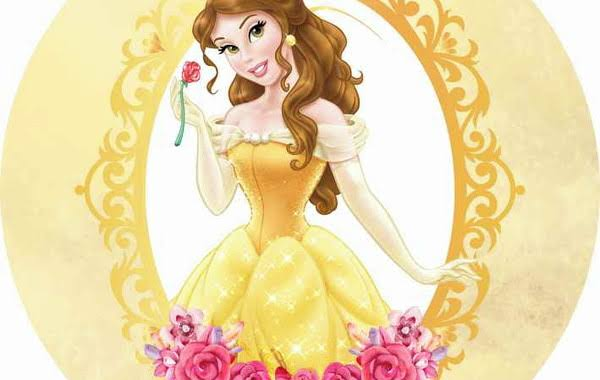

“A Bela e a Fera” é um dos contos de fadas mais emblemáticos da literatura ocidental. Suas raízes remontam ao século XVIII, com a primeira versão longa registrada sendo escrita por Gabrielle-Suzanne Barbot de Villeneuve em 1740, na França. Anos depois, em 1756, a história foi adaptada e simplificada por Jeanne-Marie Leprince de Beaumont, que transformou o conto em uma narrativa voltada para a educação moral de jovens leitoras, tornando-se a versão mais conhecida e amplamente difundida.
Ao longo dos séculos, o conto passou por diversas releituras em livros, teatro, cinema e televisão — destacando-se, especialmente, a adaptação animada da Disney, lançada em 1991, que reacendeu o interesse mundial pela história.